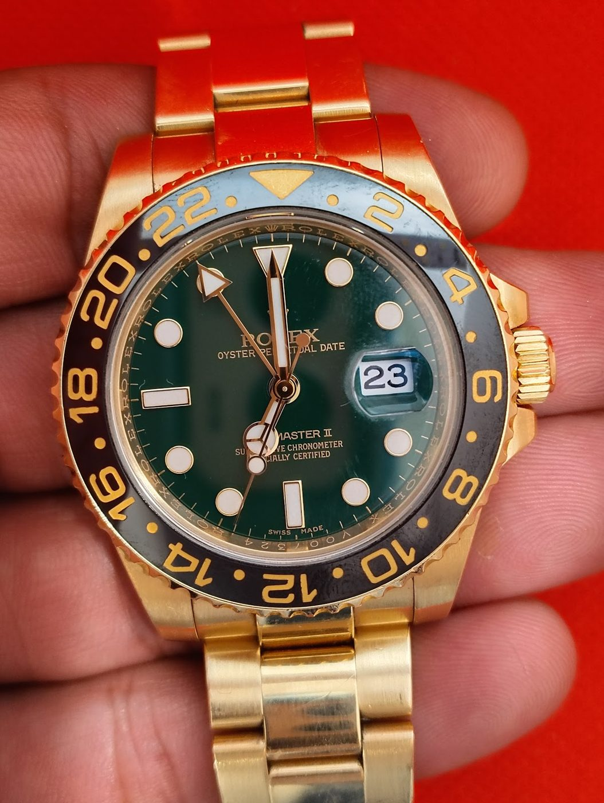

Watch repair · Restoration · Authentication · North York
Rolex and luxury watches, inspected by hand.
A Yonge Street watch shop for repairs, vintage restoration, authentication and appraisals. Reviewers say owner Sam inspects their watches himself and writes detailed reports.
- Authentication & appraisal
- Vintage restoration
- Rolex & luxury repair
- Buy · sell · trade
Services
Repair & service
Rolex and luxury watch repair and full service, including battery changes while you wait. Reviewers mention Rolex, Glashütte, Tissot and Seiko.
Vintage restoration
The shop’s ad says it specializes in vintage restoration. One reviewer’s late father’s GMT-Master II got a full service and bracelet restoration, with its original character kept.
Buy, sell & trade
The shop’s Kijiji ad says it buys, sells, trades and consigns Rolex, Cartier, Patek Philippe, Audemars Piguet and other watches.
Services come from Geneva Group’s own Kijiji ad and website, and from Google reviews. Repair prices aren’t published. The ad says estimates are given before any repair.
Authentication & appraisal
Know what’s on your wrist
$150
Luxury watch appraisal with a professional, detailed assessment, according to the shop’s Kijiji ad. Walk-ins welcome, no appointment needed.
- Visual inspection: case, dial, crystal, bracelet, serial and model numbers
- Movement inspection, with the case back opened if needed, plus a timing check
- Authenticity check of the watch and its parts
- Box, papers and service history, if you have them
- Market value and a written appraisal report with photos
“Sam made the entire process seamless with great insights into the watch industry along with his detailed appraisal report.”
Sehroz, Google review · photo from the review · Price as listed in Geneva Group’s Kijiji ad, read Nov 4, 2026
What customers say
4.5 ★ from 210 Google reviews (checked Nov 4, 2026). Quotes are word for word. Each one says where it was read: on the Google listing itself, or on a public page that copies reviews. Google shows only a handful of reviews without signing in, so some quotes come from a directory copy that doesn’t show reviewer names.
★★★★★
Had an amazing experience with Samy from the Geneva Group recently in. North York. My wife had her Rolex appraised for authenticity & Sam made the entire process seamless with great insights into the watch industry along with his detailed appraisal report. Will definitely come by again for his expertise in time pieces.
★★★★★
After being recommended to Sam by two different sellers in Toronto, I came to him and got my watch authenticated and along with that, we had very a insightful conversation. He does the watch authentication the best, provides you a nice paper, and simply the best in business. You can tell how much experience he has.
★★★★★
I used their watch authentication service and had a really positive experience. Sammy, the owner, was directly involved and took the time to carefully inspect everything himself. You can tell he really knows watches—he didn’t rush anything and paid close attention to all the small details that actually matter.
He explained the whole authentication process in a clear, honest way and walked me through what he was checking, which made it easy to understand how he reached his conclusion. It felt transparent and professional the entire time.
Turnaround was quick, communication was solid, and the report was detailed and easy to follow. Overall, it’s a trustworthy place for authentication, and I’d definitely go back again if I needed another watch verified.
★★★★★
I cannot recommend Sam and the Geneva Group highly enough.
I recently entrusted them with a very special watch—my late father's Rolex GMT-Master 2, which was recently passed down to me. This watch means the world to me, so finding someone I could trust with it was incredibly important.
From the very beginning, Sam's professionalism, knowledge, and passion for watchmaking were evident. He and the Geneva Group team took the time to explain every step of the process, kept me updated with follow-up phone calls, and provided detailed photographs showing exactly what was being done throughout the restoration.
The watch required a full service, a complete bracelet restoration, and a thorough cleaning. What impressed me most was their respect for the watch's originality and history. Rather than polishing away decades of character, they carefully preserved the case and bracelet, maintaining their thickness and integrity while bringing the watch back to life mechanically and cosmetically.
When I received the watch back, I was genuinely speechless. The bracelet is now tight and secure, the watch looks incredible, and it wears better than I could have imagined. It feels like my father's watch again—just restored to the condition it deserves.
The level of craftsmanship, communication, attention to detail, and customer care I received was truly exceptional. Sam and the Geneva Group team treated this watch with the same care and respect that I do, and for that I am extremely grateful.
If you're looking for an honest, skilled, and passionate watchmaker, look no further. This was one of the best customer service experiences I've ever had.
Thank you, Sam and the Geneva Group, for bringing my father's Rolex back to life.
★★★★★
Samy helped me figure out the best course of action with a defective Seiko (purchased elsewhere) a few months back in order to get a refund and today I returned to have my Tissot battery replaced (outside of warranty) in minutes. I'll always be a customer.
★★★★★
I had been through a lot of hassel trying to replace the battery for my 40 years old Rolex oysterquartz. In the past Rolex Canada do it for free. Now their authorized Jewllers will not do it without my agreeing to expensive overhaul and change of parts like face, crown and hands. My son who likes to collect watches had great experience with Sam's, benefited from his advice and expertise. He told me to go to Sam who changed the battery for my Rolex quartz on the spot for a very modest price. I would highly recommend Sam if anyone has any problem with your watches.
★★★★★
Had an excellent experience with Sam during the watch authentication ( Rolex ) and approval process. He was highly professional, very accommodating, and provided great recommendations throughout. Truly appreciate his expertise and service — highly recommend!
★★★★★
I recently purchased a new Rolex from a reputable grey dealer, but I wanted some additional peace of mind. I brought the watch to Sammy at the Geneva Group for authentication and appraisal. Sammy was thorough, knowledgeable, and really helped put my mind at ease. At the end of the process, he provided a detailed authentication and appraisal report via email. He was a pleasure to deal with from start to finish—I highly recommend his services.
On the bench
Real photos from Geneva Group’s public Google listing, a customer’s review and the shop’s own Kijiji ad. Each photo’s caption says which. Tap to enlarge.
Visit the shop
5160 Yonge St
North York, ON M2N 6L8
| Monday | 10 a.m.–5 p.m. |
|---|---|
| Tuesday | 10 a.m.–5 p.m. |
| Wednesday | 10 a.m.–5 p.m. |
| Thursday | 10 a.m.–5 p.m. |
| Friday | 10 a.m.–5 p.m. |
| Saturday | 10 a.m.–4 p.m. |
| Sunday | Closed |
These are the hours on Google today. The shop’s Kijiji ad and Wix site list other hours (Saturday 12–3 or 10–3, weekdays until 5:30 or 6), and the Kijiji ad and website give the postal code as M2N 6L9. Call before you go. Email: geneva.co@gmail.com